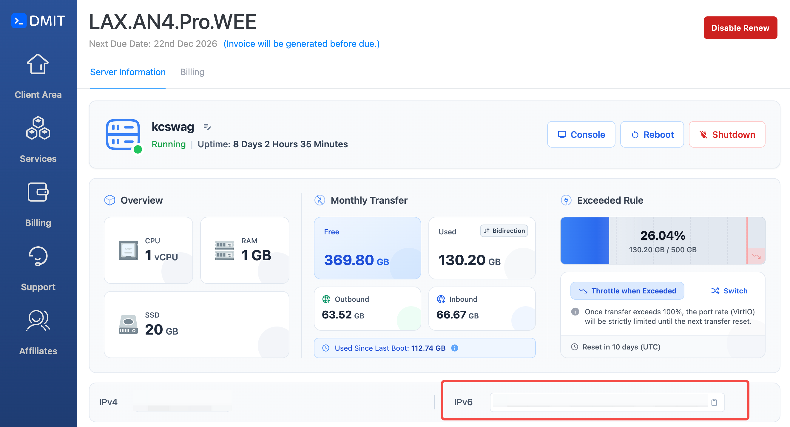
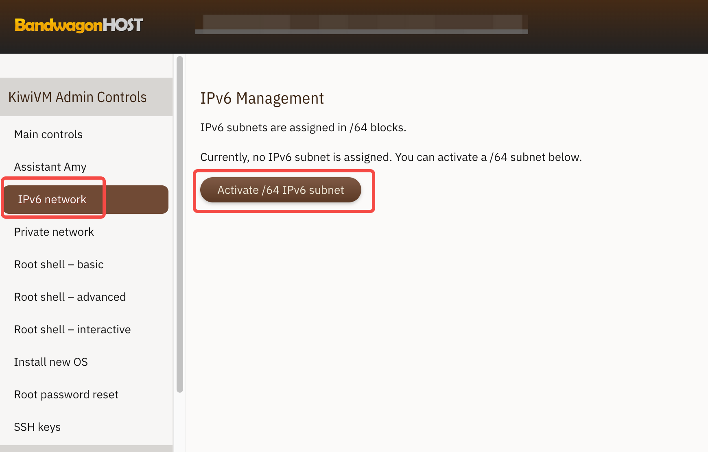
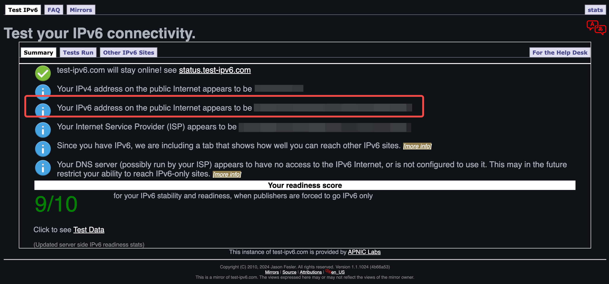
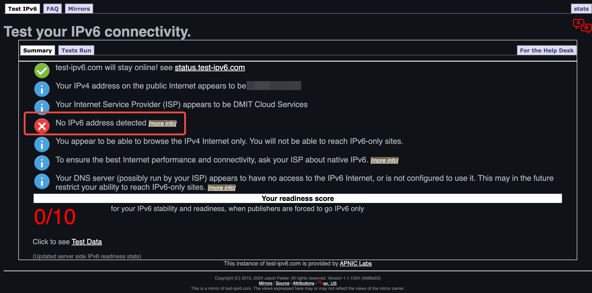
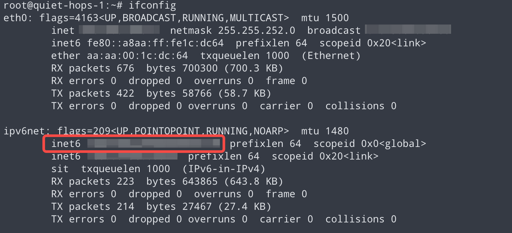
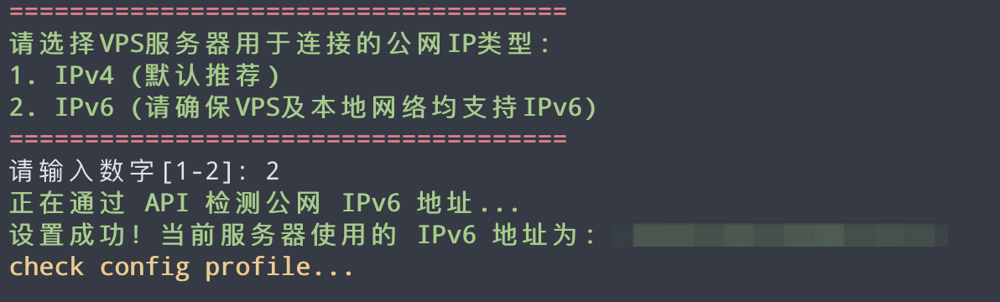

相信不少做出海或者跨境的小伙伴都经历过，自己搭建的VPN节点用着用着IP就被墙了，尤其是两会期间，更是一大片无差别封杀，更换一次IP花费动辄10刀、8刀不说，还影响自身业务，尤其对于TikTok、Facebook这种高风控的平台，频繁更换IP，轻则流量腰斩，重则账号被禁。
今天教大家一招，让你无需更换IP，也能让你被墙的VPS节点起死回生。
我们知道，节点被封的IP，其实是IPv4地址，我们本地无法连接上这个IPv4的地址。目前GFW防火墙屏蔽的基本上都是IPv4地址。但VPS除了这个IPv4地址外还有一个IPv6地址。
IPv6地址基本是畅通的，只不过我们平常很少能用到。我们正好能够利用IPv6，完美绕过GFW的封锁。
进入VPS管理后台，确认是否支持IPv6功能。目前大部分VPS厂商只提供IPv4，具体需要到管理后台查看，或者咨询客服。
我用过很多大大小小国内国外的云服务器、虚拟机，支持IPv6、CN2 GIA线路优化、综合体验最好的VPS厂商分别是：DMIT和搬瓦工。这两家我都用了很多年，网络延迟低、机器稳定，作为中转线路VPN节点的首选。
DMIT默认开启了IPv6，在后台就能直接查看到：

搬瓦工需要手动启动IPv6，启动后需要重启服务器：

开启了VPS的IPv6后，接下来需要检测一下自家网络是否已经拥有IPv6地址。
使用电脑或手机连接上家里的网络，退出所有正在运行的VPN/代理软件，浏览器访问：https://test-ipv6.com/


接下来，你需要确认拨打你家所用的电信运营商客服热线，咨询是否开启了IPv6，如果客服人员询问开启IPv6的用途，就说用来连接家里的监控设备。
运营商开启IPv6后，你需要登录光猫后台进行配置。由于各种光猫的配置差异较大，建议直接要求运营商工作人员上门调试。
完成光猫设置后，接下来需要登录路由器管理后台开启IPv6功能（配置方法请自行查询路由器具体型号）。
这里需要注意的是：
设置好路由器后，记得再次访问https://test-ipv6.com/，以确认IPv6状态正常。
登录你的VPS，执行命令"ifconfig"，检测是否正常显示IPv6地址：

接下来，输入以下命令，对服务器进行安装配置：
bash <(curl -fsSL https://github.com/marvellouswin/vps/raw/main/install.sh)
安装成功后，会显示如下配置，可使用小火箭直接扫描二维码，或复制JSON手动配置到clash/sing box客户端中，具体配置方法可参考我之前的文章。
理论上IPv6和IPv4速度相当，实际使用中几乎感受不到差别。但IPv6可以完美绕过GFW对IPv4的封锁，是被墙VPS复活的最佳方案。
不是，部分VPS厂商默认不提供IPv6。推荐使用DMIT或搬瓦工，这两家都原生支持IPv6，并且线路优质。
请检查以下几点：
两会期间GFW会大规模封禁IPv4节点，建议提前开启IPv6作为备用通道。一旦IPv4被封，立即切换到IPv6节点，无需等待新IP。
以上就是本次IPv6复活VPS教程的全部内容。如果大家在操作过程中遇到任何问题，欢迎添加我的电报(Telegram)：kcswag